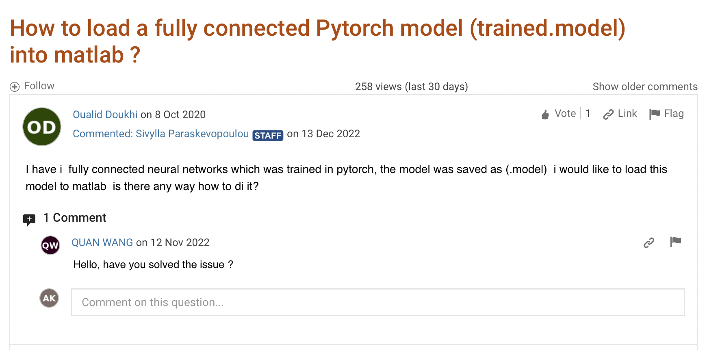
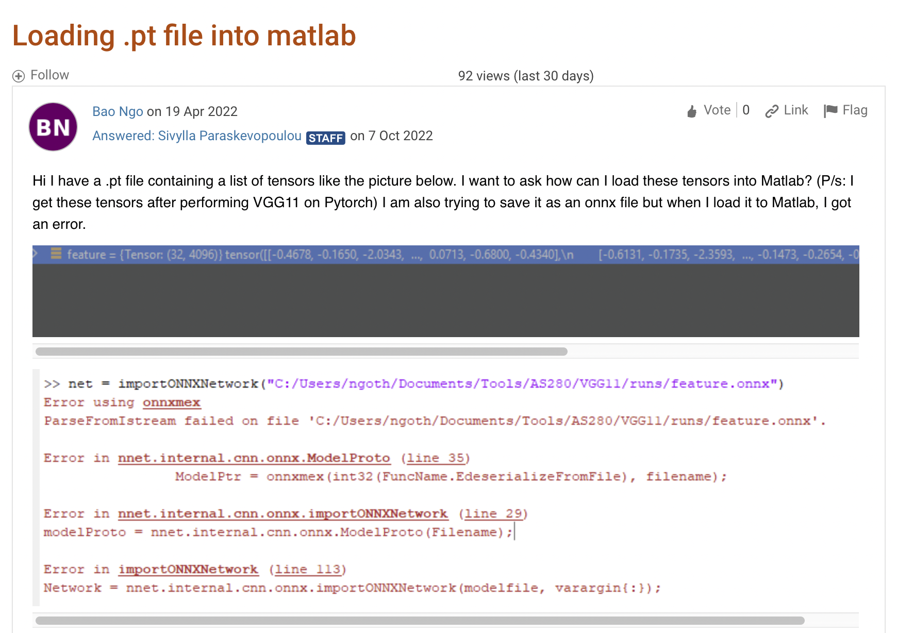

MONAI with MATLAB Integration Guide
Cross-platform workflow enabling MONAI deep learning models within MATLAB environments
Overview
A practical guide for integrating MONAI (Medical Open Network for AI) deep learning models within MATLAB workflows. This tutorial addresses the common need to use Python-based AI models in existing MATLAB research pipelines.
Target Audience: Researchers with MATLAB workflows who need to integrate Python-based AI models
Frequently Asked Questions
Q: How do I load PyTorch models into MATLAB?

Q: Can I load .pth files directly in MATLAB?

Answer: Yes, through MATLAB’s Python interface. This tutorial shows you exactly how.
Quick Start Guide
1. Environment Setup
Create MATLAB-Compatible Python Environment:
conda create --name matlab-env python=3.9
conda activate matlab-env
which python # Note this path for MATLAB configuration
Install Required Dependencies:
conda install pytorch torchvision
pip install monai
2. MATLAB-Python Interface Configuration
Configure Python Environment in MATLAB:
% Set Python executable path (adjust for your system)
pyversion('/Users/amithkamath/opt/anaconda3/envs/matlab-env/bin/python')
% Verify configuration
pe = pyenv;
disp(pe)
3. Model Loading and Execution
Load Pre-trained MONAI Model:
% Import necessary Python modules
torch = py.importlib.import_module('torch');
monai = py.importlib.import_module('monai');
% Load trained model
model = torch.load('path/to/monai_model.pth');
model.eval();
Process Medical Images:
% Load and preprocess medical image data
input_data = prepare_medical_image(image_path);
% Run inference
with py.torch.no_grad()
output = model(input_data);
end
% Convert results back to MATLAB format
segmentation_result = double(output.numpy());
Best Practices and Troubleshooting
Memory Management
- Use
py.torch.no_grad()for inference to reduce memory consumption - Clear Python variables when processing large datasets
- Monitor memory usage across both MATLAB and Python environments
Error Handling
try
% MONAI model execution
result = run_monai_model(input_data);
catch ME
% Handle cross-platform errors gracefully
fprintf('Error in Python execution: %s
', ME.message);
% Fallback or error recovery logic
end
Performance Optimization
- Pre-allocate MATLAB arrays for output data
- Minimize data type conversions between platforms
- Use batch processing for multiple images
When to Use This Approach
Ideal for:
- Existing MATLAB research pipelines that need modern AI capabilities
- Teams working across different platforms
- Rapid prototyping with state-of-the-art models
- Educational environments with mixed tool preferences
Consider alternatives if:
- Starting a new project (pure Python might be simpler)
- Real-time applications requiring maximum performance
- Teams exclusively using Python
Educational Applications
Medical Image Analysis Courses
This integration approach teaches students to work with industry-standard tools across platforms, preparing them for professional environments where tool diversity is common. Students learn practical workflow design and system integration skills.
Research Methods Training
The tutorial demonstrates reproducible research practices and collaborative development approaches, showing how to make research accessible across different computing platforms and team preferences.
Repository Resources
The GitHub repository includes:
- Setup Scripts: Automated environment configuration
- Example Models: Pre-trained MONAI models for testing
- Sample Data: Medical imaging datasets for demonstration
- Documentation: Comprehensive setup and troubleshooting guide
Educational Motivation
The integration of Python-based AI frameworks with MATLAB environments addresses critical real-world workflow challenges that researchers and practitioners face daily. Legacy pipeline integration represents a major concern, as many researchers have invested years developing established MATLAB workflows for preprocessing, analysis, and visualization that would be costly and time-intensive to completely rebuild.
Collaborative requirements frequently arise when teams receive pre-trained models in different frameworks than their primary development environment, creating compatibility challenges that can impede research progress. Tool specialization reflects the reality that MATLAB excels in certain areas such as interactive applications and statistical analysis, while Python dominates in deep learning development, suggesting that hybrid approaches may offer the best of both worlds.
Deployment flexibility becomes crucial when production environments require specific platform integrations that may not align with development environments, making cross-platform compatibility a valuable skill for career advancement and practical application.
Common Integration Scenarios
Research Workflow Optimization
Researchers often face the challenge of existing MATLAB pipelines that represent mature, well-tested workflows for preprocessing, statistical analysis, and visualization that have been refined over years of use. Python model integration enables researchers to leverage state-of-the-art MONAI models without requiring complete workflow reconstruction, preserving valuable existing infrastructure while accessing cutting-edge capabilities.
Rapid prototyping becomes possible when researchers can test new AI models within their established research frameworks, accelerating the research cycle and reducing the barrier to adopting new methodologies.
Collaborative Development
Multi-platform teams are increasingly common in research environments where different group members use different primary development environments based on their backgrounds and specializations. Model sharing becomes seamless when team members can easily integrate models developed by collaborators in different frameworks, fostering greater collaboration and knowledge transfer.
Publication reproducibility is enhanced when research tools can be accessed by broader communities regardless of their preferred development platform, increasing the impact and adoption of research contributions.
Educational Applications
Teaching flexibility allows instructors to demonstrate concepts across multiple platforms, accommodating diverse student backgrounds and preferences while exposing students to industry-standard tools. Student choice enables learners to work in their preferred environment while still accessing course content and maintaining engagement.
Industry preparation becomes increasingly important as students need exposure to multi-platform professional environments where they will likely encounter diverse toolchains and integration challenges throughout their careers.
Technical Implementation
Environment Setup Process
Our implementation guide provides step-by-step instructions for conda environment creation that establishes an isolated Python environment specifically configured for compatibility with MATLAB’s Python integration capabilities. Dependency management covers the installation of PyTorch, MONAI, and supporting libraries with careful attention to version compatibility and platform-specific requirements.
MATLAB-Python interface configuration ensures robust cross-platform communication with proper error handling and performance optimization. Model loading procedures enable efficient transfer of trained models between frameworks while maintaining model integrity and computational efficiency.
Key Features Demonstrated
The tutorial showcases UNet model integration by demonstrating how to load and run MONAI UNet architectures seamlessly within MATLAB environments, maintaining full functionality and performance. Medical image processing workflows illustrate end-to-end segmentation pipelines that combine the strengths of both platforms for comprehensive analysis capabilities.
Performance optimization techniques ensure efficient memory management and computation that minimize overhead associated with cross-platform integration. Error handling protocols provide robust integration approaches with proper exception management that ensure reliable operation in production environments.
Learning Outcomes
Students and researchers using this tutorial will master cross-platform integration by developing thorough understanding of how to bridge Python and MATLAB environments effectively, including the technical challenges and solutions associated with multi-platform development. They will develop workflow efficiency by learning to leverage the unique strengths of both platforms while minimizing the overhead and complexity of integration.
Participants will implement production-ready solutions by creating robust, deployable medical AI applications that can operate reliably in diverse computing environments. Most importantly, they will solve real-world problems by addressing common integration challenges that arise in both research and industry settings, preparing them for the practical demands of professional medical AI development.
Applications in Medical AI Education
Medical Image Analysis Courses
Students gain exposure to multi-platform development practices that reflect industry-standard approaches to software development in medical imaging. Tool integration skills prepare students for the practical challenges of combining specialized software tools that are common in professional medical AI development environments.
Workflow design capabilities enable students to think strategically about tool selection and integration, developing the architectural thinking necessary for designing efficient and maintainable medical AI systems.
Deep Learning in Healthcare
The tutorial provides essential training in model deployment by exposing students to real-world deployment scenarios and the challenges associated with moving AI models from research environments to clinical applications. Framework interoperability understanding helps students navigate the complex ecosystem of different AI frameworks and their respective strengths and limitations.
Production considerations training addresses the critical transition from research prototypes to clinical applications, including the reliability, performance, and integration requirements necessary for medical AI deployment.
Research Methods Training
Students develop skills in reproducible research by learning to ensure research accessibility across different computing platforms, increasing the impact and adoption of their work. Collaborative development skills prepare students for working effectively in multi-platform research teams where different members may use different primary tools and environments. Documentation standards training provides students with best practices for creating cross-platform tutorials and documentation that serve broader research communities effectively.
Technical Innovation
This tutorial demonstrates several advanced concepts that push the boundaries of cross-platform integration in medical AI applications.
Cross-Platform Communication
The tutorial covers API design principles for creating efficient interfaces between MATLAB and Python environments that minimize computational overhead while maintaining robust functionality. Data transfer optimization techniques focus on minimizing overhead in cross-platform data exchange, particularly important when working with large medical imaging datasets that can strain system resources.
Memory management strategies ensure efficient handling of large medical imaging datasets across platform boundaries, preventing memory leaks and performance degradation that can occur in complex integration scenarios.
Workflow Integration
Modular design principles enable the creation of reusable components for different integration scenarios, promoting code reusability and maintainability in professional development environments. Error recovery mechanisms provide robust handling of cross-platform execution failures, ensuring that integration solutions can operate reliably in production environments where failure is not acceptable.
Performance monitoring tools enable systematic assessment of integration efficiency, allowing developers to optimize their solutions and identify bottlenecks that could impact clinical workflow efficiency.
Industry Relevance
The skills demonstrated in this tutorial have direct applications across multiple industry scenarios that medical AI professionals commonly encounter. Medical device development often requires integrating AI models into clinical software systems that may use different platforms than the research environment where the models were developed.
Research translation involves moving academic research innovations into commercial applications, typically requiring integration across multiple platforms and frameworks. Consulting projects frequently demand rapid integration of AI capabilities into existing client systems that may use legacy platforms or specific technological constraints.
Regulatory compliance considerations often require meeting validation requirements across multiple platforms, ensuring that AI systems operate consistently regardless of the deployment environment.
Impact on Professional Development
This tutorial provides essential professional skills for modern AI practitioners working in increasingly complex technological environments. Multi-platform competency enables professionals to work effectively across different development environments, increasing their value and adaptability in diverse work settings.
Integration expertise develops crucial skills for combining specialized tools and frameworks, a common requirement in professional medical AI development where different tools excel in different domains. Problem-solving approach training provides systematic methodology for addressing compatibility challenges that arise in real-world integration scenarios.
Documentation standards education ensures that professionals can create tutorial and documentation content that meets industry standards for clarity, completeness, and maintainability.
Repository Resources
The complete tutorial includes:
- Setup Scripts: Automated environment configuration
- Example Models: Pre-trained MONAI models for testing
- Sample Data: Medical imaging datasets for demonstration
- Documentation: Comprehensive setup and troubleshooting guide
Visit the GitHub repository for complete source code, installation scripts, and extended examples demonstrating various MONAI model integrations within MATLAB workflows.